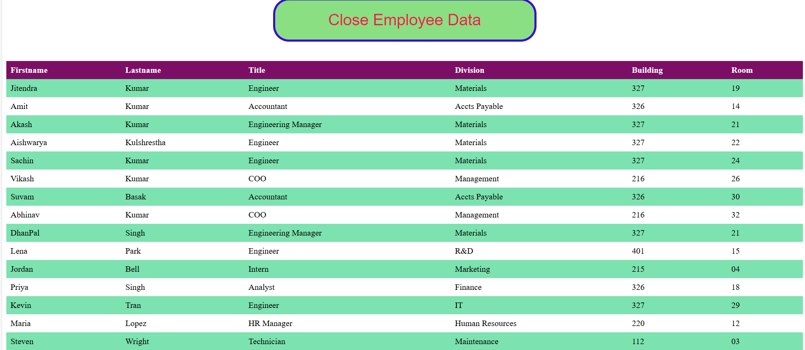

Course Projects
The table below summarizes selected labs from this semester, including their focus and technologies.
| Project | Topic | Technologies | Image |
|---|---|---|---|
| Lab 9 | Employee XML Toggle | HTML, CSS, JavaScript |  Lab 9 |
| Lab 10 | Accessible Name and Description Computation | Semantic HTML, ARIA, CSS |  Lab 10
Lab 10 |
| Published webs of my lab for csit 121 | HTML & CSS | Layout, forms, basic scripts | Links to all websites |
Accessibility‑Focused Work
The Accessible Name and Description project demonstrates how computed names affect screen reader output and keyboard navigation for interactive elements.
It uses techniques described in WAI‑ARIA and related W3C guidance to improve the user experience for people with disabilities.